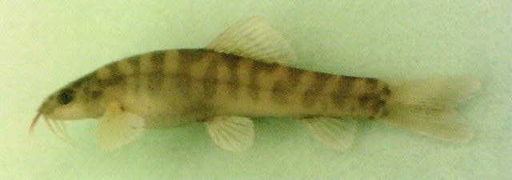

饲养建议AQUARIUM
可尝试人工饲养，建议使用 60–120 L 水族箱，保持水温稳定、避免骤变。可投喂红虫、虾肉与植物性配合饲料，活饵需先检疫，日投喂量以数分钟内吃完为宜。新鱼应隔离观察，避免与体型差异过大的鱼混养。请仅使用人工繁育或合法来源个体，不得采捕保护物种；不要随意放生。

鲤形目 · 条鳅科
Schistura kengtungensis
条鳅科中小型鱼类，分布于云南，多见于近底层水层，动植物兼食。
具有完整或接近完整侧线、8 1/2 分枝背鳍条、9+8 分枝尾鳍条且无两性二态性的物种群体的成员。可以通过以下特征来区分：尾柄比深度长1.10-1.44倍，其长度为14.2-17.5％体长，67-86％头长，其深度为11.5-13.2％体长，52-62％头长； 8-11 条；黑色基部尾条未到达背侧和腹侧中线，尾柄上有中等龙骨，下唇中间中断。尾鳍微缺。颈背处有轻微凹陷； 8-12条，在背侧变成侧线上的斑点和鞍状斑纹；背鳍基部有一个黑色斑点。
体形呈长条形；最大体长可达 11.0 cm（体长）；计数特征为背鳍软条 12，臀鳍软条 8。
文献记录分布于云南。
涉及水系包括澜沧江（湄公河）。
国外分布于缅甸。
丘陵溪流的中下游底质多为砾石和卵石，石缝与落叶堆为小型鱼类提供庇护。虾虎鱼、鳅类和部分鮡科鱼类常贴近底部活动，以底栖昆虫、甲壳类和有机碎屑为食。
栖息于淡水，近底层水层。
气候带属热带。
栖息于小、浅、高梯度的溪流中，底质为鹅卵石或巨石。成熟雌鱼体长 5.27 厘米，卵径 2.4 毫米。
现有食性记录较少，按营养级推断，动植物兼食。营养级约 3.0。
食性类型属杂食性。
繁殖生物学资料尚在整理中。
本种未列入 2021 年《国家重点保护野生动物名录》，但仍可能受省级名录、禁渔期、禁渔区、水产种质资源保护区及地方渔业法规管理。垂钓、采集或饲养前，请先确认当地规定。
可尝试人工饲养，建议使用 60–120 L 水族箱，保持水温稳定、避免骤变。可投喂红虫、虾肉与植物性配合饲料，活饵需先检疫，日投喂量以数分钟内吃完为宜。新鱼应隔离观察，避免与体型差异过大的鱼混养。请仅使用人工繁育或合法来源个体，不得采捕保护物种；不要随意放生。
物种档案整理自 FishBase（物种 ID 26842），分类接受名参考 GBIF Backbone Taxonomy；保护等级依据 2021 年《国家重点保护野生动物名录》。中文描述由英文原始资料机器翻译并校正术语，可能存在语义偏差。
典型生境图片为生境类型示意图，用于呈现该类水域的环境特征，并非本种在野外的实拍。垂钓、饲养与野采建议仅为科普参考，请以当地渔业与林草主管部门规定为准。